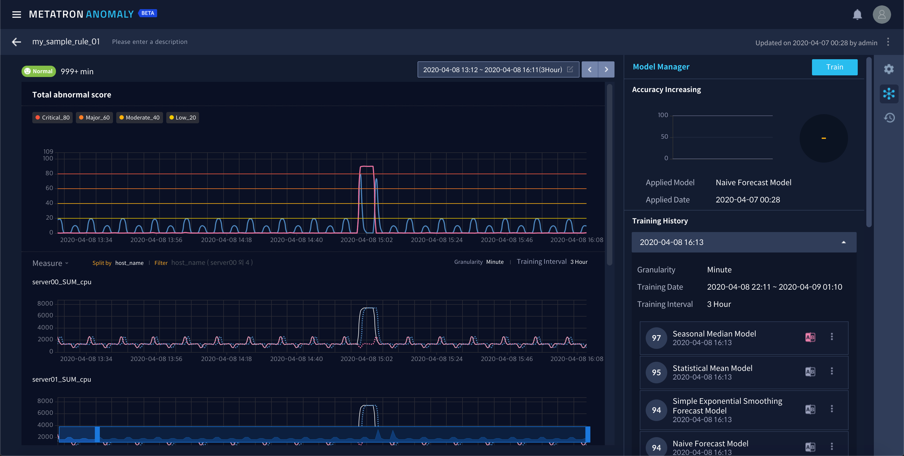

모델 매니저¶
시계열 데이터에 머신러닝 모델을 적용했을 때, 일반적으로 시간이 지나면 데이터 패턴이 변하고 모델의 정확도가 점차 하락하는 문제점이 발생합니다. 이 경우 데이터 과학자들은 데이터 관리자에게 요청하여 신규 데이터를 가져온 다음 직접 모델을 재학습시켜 일정 수준 이상의 정확도를 확보하면 시스템에 재배포하는 과정을 거쳐야 합니다. 이 과정은 때로는 수 개월까지 소요될 수 있습니다.
Metatron Anomaly는 데이터 과학자, 데이터 관리자가 아닌 일반 사용자들도 쉽게 모델을 재학습할 수 있는 모델 매니저 기능을 지원합니다.
모델 매니저는 다음의 기능들로 이루어집니다.
생성된 알람 룰 상세 페이지 우측 메뉴의  아이콘을 누르면 모델 매니저로 진입합니다.
아이콘을 누르면 모델 매니저로 진입합니다.

모델 정확도 변동 추이¶
상단에서는 모델 정확도가 가장 최근 학습했을 때보다 얼마나 증가하거나 떨어졌는지 보여주며, 그래프에 마우스 오버하면 기간에 따라서 정확도 점수가 변화하는 것을 수치로 보여줍니다. 하단에는 현재 적용된 모델의 정보 및 적용 시점이 표기됩니다.

모델 재학습 및 학습 이력¶
만약 정확도가 원하는 수치보다 떨어졌을 경우 우측 상단의 Train 버튼을 눌러 재학습할 수 있습니다. 재학습 대상이 될 학습 데이터 범위와 알고리즘 종류를 선택하고 Train을 누르면 재학습을 시작합니다.

재학습이 시작되면 Training History에서 지금 시간으로 기록된 메뉴에서 학습 현황을 볼 수 있습니다. 또한 리스트에서 과거에 학습한 내역 또한 확인할 수 있습니다.

모델 비교 및 신규 모델 적용¶
신규 모델 우측의  아이콘을 누르면 기존에 적용된 모델과 신규 학습한 모델을 비교할 수 있습니다. 기 적용된 모델은 파란색, 신규로 선택한 모델은 분홍색으로 표시되어 그래프 상에서 두 모델의 예측값과 Abnormal Score 값을 비교할 수 있습니다.
아이콘을 누르면 기존에 적용된 모델과 신규 학습한 모델을 비교할 수 있습니다. 기 적용된 모델은 파란색, 신규로 선택한 모델은 분홍색으로 표시되어 그래프 상에서 두 모델의 예측값과 Abnormal Score 값을 비교할 수 있습니다.

새롭게 학습시킨 모델을 룰에 적용하려면 우측의  메뉴에서 Apply this training model 을 클릭합니다. 적용된 모델에는
메뉴에서 Apply this training model 을 클릭합니다. 적용된 모델에는  태그가 표시됩니다.
태그가 표시됩니다.